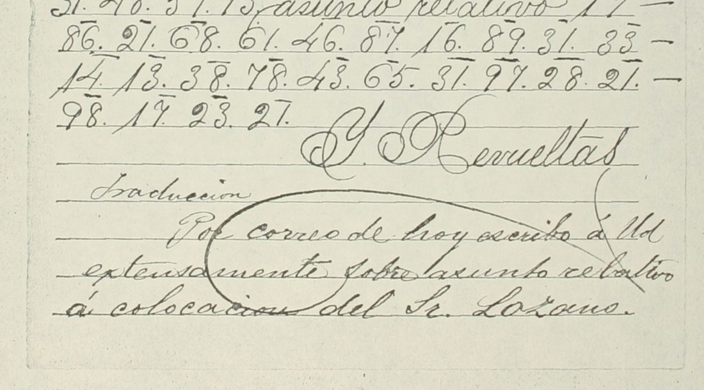

At a glanceKey from adjacent plaintext · partial (42% of the cipher)
- The letter
- A one-page letter of 1 April 1886 from General Bernardo Reyes, Monterrey, to General Ignacio Revueltas, Mexico City, in clear Spanish with ten cipher runs (68 two-digit groups, 12 words).
- Where
- CEHM-Carso, Mexico City, Fondo DLI (Archivo del General Bernardo Reyes), DLI.4.634.1. Not on DECODE. Was catalogue entry 1447, retired 12 November 2026; its summary said half the text is in cipher, but only one passage is.
- The cipher
- A simple homophonic substitution, one two-digit group per letter, one to three groups for a letter, the word division given by the clear words between the runs: the old War Ministry key, not the President’s four-digit code and not the new table of 16 March 1886.
- How it was read
- The key was rebuilt from the translated cipher letter DLI.3.524.1 of 9 December 1885 (245 letter pairs, 41 groups, no conflicts), frozen, and applied to the letter. It covers 60 of the 68 groups (coverage, not accuracy: the letter has no contemporary decipherment); eight groups (seven kinds) not in it were filled from the sense, two kinds of them since confirmed on two other translated telegrams.
- What it says
- “Since I fear a rancher more than a politician, I shall keep watch on the conduct of that gentleman”: the cipher words are the ones the clear text leaves out.
- Still open
- Seven of the twelve words rest on letters given by the context alone (eight groups, two of them in provechoso); after the new test five kinds of group stay on context alone. The runs form no sentence by themselves (the clear text carries it): state, not prose. The writer dropped a letter in ranchero. The order of events (a context reading first) rests on the contributor’s record.
- Credit
- Transcription, key and reading by WAINUT with AI language-model agents, from the CEHM images; the key rests on the translation written at the time. The project added a test on two further translated telegrams.
01 The letter
Reyes writes from Monterrey to Revueltas about the steps Garza Galán has taken towards a reconciliation with General Cervantes. The archive’s summary (“la mitad del texto cifrado”) overstates the cipher: only the key words of one passage are in code, and the reconciliation news is in clear. The cipher words are the ones the summary does not give.
02 The key
The key is the War Ministry’s old two-digit key (a 17 47 87; e 13 43 83; i 19 49 89; o 21 31 61; r 57 77 97; t 56 76 96 …). Reyes says on the back of the table sent on 16 March 1886 that he has lately used “la clave antigua”, and the letter fits it. It was rebuilt from DLI.3.524.1, Revueltas to Reyes, 9 December 1885, which carries a cipher letter and its contemporary translation: each run of groups was aligned with the translation’s words, 245 letter pairs in 25 rows, and the rows that do not align one group to one letter were left out.
03 The tests
Inside the key source, the contributor rebuilt the key from rows 1-15 of DLI.3.524.1 only and applied it to rows 16-31, graded against the translation: 99 of 114 letters right, none wrong, 15 letters on groups the training half had not seen. On the groups it knew, 99 of 99. The frozen key (its SHA-256 is recorded in FROZEN.sha256) covers 60 of the 68 groups of the letter itself (the other eight groups are seven kinds); the letter has no contemporary decipherment, so that is coverage, not accuracy. The contributor states the order plainly: the runs had been read tentatively from the clear context before the key was built, and the key’s mechanical output agrees with that reading on all 60 covered groups. It is an agreement check, not a blind test, and the order rests on the contributor’s record.
At the integration the project made a fresh test the contributor had not run. Two further telegrams in the same key, with a translation written on the same page, were decrypted with the frozen key unchanged: DLI.4.631.1 (24 March 1886, “Clave antigua”, translated “Por correo de hoy escribo á Ud extensamente sobre asunto relativo á colocación del Sr. Lozano”) gave 47 letters right, none wrong, 14 on groups not in the key; DLI.3.416.1 (28 October 1885, “debe decir á la autoridad legal y legítimamente constituida”) gave 44 right, none wrong, 5 not in the key. They also show 23 = n (twice) and 65 = ñ, two of the seven groups of the letter that rested on context. (The numbers on these pages carry overlines, and the project’s own transcription of them is a single pass.)

The contributor’s statistical check pools the 245 key pairs and the 68 groups of the letter (313 tokens): −1.714 per letter against −6.835 for random keys (z 9.0). Most of those tokens are the key source’s, so this mainly confirms the key against its translation; the letter alone (71 letters) is too short for the test.
04 The reading
Decrypted mechanically with the frozen key, the ten runs give:
pro[53]e[82]oso · su via[40]e · ca[20]ital · miedo · rn[12]ero · pendie[23]te · conducta · di[82]ose[65]or · dejar · eso
The bracketed groups are not in the key. Filled from the sense they read provechoso, su viaje, capital, miedo, ranchero (the writer left out the a), pendiente, conducta, dicho señor, dejar, eso. In the letter: “… y esto me ha dado idea de lo provechoso que fué su viaje á la capital, y me he felicitado de que lo haya verificado; pero de todos modos, como yo le tengo mas miedo á un ranchero que á un politico, estaré pendiente de la conducta de dicho señor sin dejar por eso de estrechar como he estrechado nuestras relaciones.” That is: how useful his journey to the capital was; but since I fear a rancher more than a politician, I shall keep watch on that gentleman’s conduct, without ceasing for that reason to draw our relations closer.
Counted by the README rule, strictly: of the 12 cipher words, 5 (su, miedo, conducta, dejar, eso) are read from the signs with the frozen key; the other 7 rest on letters given by the context alone, on groups not in the key (eight groups in all, two of them in provechoso), and count as not read: 5 of 12, 41.7%. No word is a hole. The runs are one or two words each and form no sentence of their own; the sentence is carried by the clear text around them, so the cipher is given as runs with their decoding and an English gloss, not as a prose reading (the same shape as ralamb1657). With the clear letter around them the passage reads coherently (grade B).
05 What remains uncertain
- Groups 12, 20, 40, 53 and 82: values from context only (ch, p, j, v, ch); 82 = ch holds at both its places. More translated letters of the Reyes–Revueltas channel in Fondo DLI would test them (open codes).
- r{+a}nchero is the weakest word: the writer dropped the a (Revueltas had asked him on 24 March not to drop letters) and 12 = ch comes from context; it fits the struck clear word and the contrast with a politician.
- The word struck out before the fifth run, probably “canalla”, cannot be read through the strike-through (illegible).
- On DLI.3.524.1, the right edge of page 1 is cut by the scan and a few groups and the last line are lost (needs the original). The full set of signs of DLI.3.524.1 was not checked against its image, only the first rows.
- The transcription of the letter was checked against the page by a second reader (50 of 68 groups) and again at the integration; no full blind second transcription and no human palaeographer.
- Prior art: four web searches and the catalogue’s own check found no edition or decipherment of this letter; Narváez’s 2019 book and the thesis of Ríos Vázquez on Porfirian espionage were not opened.
Full texts
The transcription and the decryption of every document on this page, so that the reading can be used and checked. Short files are shown here; all are in the repository.
DLI.4.634.1, Reyes to Revueltas, 1 Apr 1886: 10 cipher runs in a clear letter not prose
Garza Galán, since his arrival, is moving towards a reconciliation with General Cervantes, which shows Reyes how useful his journey to the capital was; but since Reyes fears a 'ranchero' more than a politician, he will keep watch on that gentleman's conduct, without ceasing to draw their relations closer.
Transcription
# DLI.4.634.1 (Reyes to Revueltas, Monterrey, 1 Apr 1886), reconciled transcription of the cipher groups # Clear text in <...>; manuscript line ends '|'. Pass 1 and pass 2 agree on all 68 groups. # Pass-1 uncertainty 1[3|0] (group 52 of 68) settled on the 2x crop as 13: open-top 3, no closed bowl. R1 60 57 61 53 43 82 21 78 61 R2 78 54 73 89 17 40 83 R3 16 47 20 19 76 87 68 R4 64 19 43 84 61 R5 77 63 12 13 57 61 R6 60 13 63 14 19 43 23 76 83 R7 16 61 63 84 74 16 96 17 R8 14 19 82 61 78 13 65 61 77 R9 14 13 67 47 57 R10 83 78 61
Decryption
R1 pro[53]e[82]oso R2 suvia[40]e R3 ca[20]ital R4 miedo R5 rn[12]ero R6 pendie[23]te R7 conducta R8 di[82]ose[65]or R9 dejar R10 eso
Reading
# DLI.4.634.1: Bernardo Reyes to Ignacio Revueltas, Monterrey, 1 April 1886
Key: key_frozen.tsv (from DLI.3.524.1), unchanged. Marks and checks are explained in NOTES.md. In the letter below the
abbreviations Sr, Gral and compº are written out and the struck-out word before "ranchero" is left out (see NOTES.md).
```marked
R1 pro{[53]/v}e{[82]/ch}oso
R2 su via{[40]/j}e
R3 ca{[20]/p}ital
R4 miedo
R5 r{+a}n{[12]/ch}ero
R6 pendie{[23]/n}te
R7 conducta
R8 di{[82]/ch}o se{[65]/ñ}or
R9 dejar
R10 eso
```
## The letter (original spelling; cipher runs in bold)
De Monterey á México Abril 1º/86.
Señor General Ignacio Revueltas.
Muy estimado compañero y amigo mio:
Hago referencia á su grata de 20 del mes próximo pasado.
Desde que llegó el Señor Garza Galán ha dado pasos que tienden á una reconciliacion con el Señor General Cervantes y esto me
ha dado idea de lo **provechoso** que fué **su viaje** á la **capital**. y me he felicitado de que lo haya verificado;
pero de todos modos, como yo le tengo mas **miedo** á un **ranchero** que á un politico, estaré
**pendiente** de la **conducta** de **dicho señor** sin **dejar** por **eso** de estrechar como he estrechado nuestras
relaciones.
Sabe Ud. [...]Translation
# DLI.4.634.1: Bernardo Reyes to Ignacio Revueltas, Monterrey, 1 April 1886 (English) Words that were in cipher are in **bold**; a word in which one letter is a context fill is marked with `*`. From Monterrey to Mexico City, 1 April 1886. General Ignacio Revueltas. My dear comrade and friend, I refer to your kind letter of the 20th of last month. Since Mr Garza Galán arrived he has taken steps towards a reconciliation with General Cervantes, and this has shown me how **useful*** **his** **journey*** to the **capital*** was, and I have been glad that he made it. But in any case, since I am more **afraid** of a ~~scoundrel~~ **rancher*** than of a politician, I shall keep **watch*** on the **conduct** of **that*** **gentleman***, without **ceasing**, for **that** reason, to draw our relations closer, as I have done. You know [closing formula]. Notes: "ranchero" (here "rancher", a country landowner or rural strongman) is the deciphered word that replaced the struck clear word. "su viaje" can also be "your journey"; the context (Garza Galán's arrival in Mexico City and his steps after it) points to "his". "pendiente de" is "watchful of, keeping an eye on".
DLI.3.524.1, Revueltas to Reyes, 9 Dec 1885 (key source and held-out test) decoded, not read
A mechanical decode with holes in most sentences: shown so that the transcription and the key can be checked and improved, not as a reading.
Transcription
# DLI.3.524.1, Revueltas to Reyes, Mexico, 9 Dec 1885 ("Carta cifrada y traduccion"), War Ministry two-digit key.
# Cipher text (one pass, crops at 1x of the 1724 px scan; the right edge of page 1 is cut by the scan, groups lost
# there are '??'). Each row: segment number, the contemporary translation's words for that run (on page 2 of the
# same item), then the cipher groups. Rows tagged '!' do not align one group to one letter and are NOT used
# to build the key (reason given). Clear words of the cipher letter are in <...>.
# seg plain(from contemporary translation) groups
1 particular 30 17 77 76 19 16 74 68 87 57
2 reservado 77 43 78 83 77 73 17 14 31
3! no[h]asido 33 31 17 78 19 14 21 (h of 'ha' not enciphered; aligned as 'noasido')
3a noasido 33 31 17 78 19 14 21
4! posible 60 31 78 89 18 13 (6 groups for 7 letters: one of b/l omitted; not used)
5 hacer 81 17 16 13 77
6 <otra> cosaquedarle 16 21 78 47 69 74 13 14 17 77 68 83
7 <á> julio 67 74 68 19 31
8 <la orden> oficialparaquesede 31 15 89 16 19 17 68 60 17 77 87 69 74 13 78 13 14 83
9 escolta 43 78 16 21 68 76 17
10 <; pero como es> claroquenopodra 16 68 17 77 31 69 74 13 33 31 60 21 14 77 17
11 <u> abandonar 17 18 47 63 14 21 33 87 57
12 los 68 61 78
13 <destacamentos> digaencontestacion 14 89 80 17 13 33 16 31 33 76 83 78 56 87 16 49 21 63
14 <á la> sria 78 77 89 17
15 quenotiene 69 74 13 63 21 76 19 13 63 8? (last group cut by the scan edge: '8?')
16 fuerza 15 74 43 77 71 87
17 <su> ficiente 15 89 16 49 13 33 76 43 (the '49' is at the cut edge, read 4?; taken as 49)
18 alegando 17 68 13 10 87 63 14 21
19 <la> grana 80 97 17 33 87 (the writer splits 'alarma' as 87 <la> 77 64 17)
20 <la> rma 77 64 17
21 <y> multitud 64 74 68 76 19 56 54 14
22 degente 84 13 10 83 63 96 43
23! armada 87 77 6? 17 44 87 ('armada' is not in the translation; 6? cut at edge; not used)
24 queexiste 69 74 13 13 70 89 78 76 83
25 <= En> cuantoalgobernadordigale 16 74 87 33 96 21 17 68 10 61 18 13 77 63 87 14 31 77 14 89 10 17 68 13
26! dirija 14 84 77 49 67 13 (translation 'dirija'; cipher gives d-?-r-i-j-e, 84 where i expected; not used)
27 <un> aconsulta 87 16 31 33 78 74 68 76 17
28 <á la> sria 78 77 89 17
29! ultimoestabueno 74 6? 76 89 64 21 13 78 56 17 16 74 13 33 31 (6? at edge; 'bueno' enciphered with 16, elsewhere c; not used)
30! <y se contesta á Cervantes> como<u>desea 16 21 64 31 74 14 ?? | 13 78 83 17 (bottom line cut by the scan; not used)
31 <= Manifestacion> hasidoentregadaalsenado 11 17 78 89 14 61 13 33 76 77 83 10 17 14 17 87 68 78 13 33 17 14 31Decryption
# DLI.3.524.1: decryption with key_frozen.tsv, row by row against the contemporary translation (page 2). # seg translation decryption 1 particular particular 2 reservado reservado 3! no[h]asido noasido 3a noasido noasido 4! posible posibe 5 hacer hacer 6 <otra> cosaquedarle cosaquedarle 7 <á> julio julio 8 <la orden> oficialparaquesede oficialparaquesede 9 escolta escolta 10 <; pero como es> claroquenopodra claroquenopodra 11 <u> abandonar abandonar 12 los los 13 <destacamentos> digaencontestacion digaencontestacion 14 <á la> sria sria 15 quenotiene quenotien[?] 16 fuerza fuerza 17 <su> ficiente ficiente 18 alegando alegando 19 <la> grana grana 20 <la> rma rma 21 <y> multitud multitud 22 degente degente 23! armada ar[?]a[44]a 24 queexiste queexiste 25 <= En> cuantoalgobernadordigale cuantoalgobernadordigale 26! dirija ddrije 27 <un> aconsulta aconsulta 28 <á la> sria sria 29! ultimoestabueno u[?]timoestacueno 30! <y se contesta á Cervantes> como<u>desea comoud[?] | esea 31 <= Manifestacion> hasidoentregadaalsenado hasidoentregadaalsenado
Key: key.tsv, key_frozen.tsv
06 Sources
- CEHM-Carso (Centro de Estudios de Historia de México, Fundación Carlos Slim), Fondo DLI: DLI.4.634.1 (the letter), DLI.3.524.1 (key source: cipher letter and translation, 9 December 1885), DLI.4.631.1 and DLI.3.416.1 (extra tests), DLI.4.623.1 and DLI.4.630.1 (the new table and Revueltas’s request); images from the CEHM viewer, fetched 12 November 2026, which refused nothing.
- Transcription, key and reading by WAINUT (pull request #472), in
targets/reyes1886.
The key, the transcriptions, the reading and the checks are in targets/reyes1886.
Cite this page
WAINUT and Daniel Bourdeau, “General Bernardo Reyes to Ignacio Revueltas, Monterrey, 1 April 1886”, Cyphersolver, posted 12 November 2026, https://cyphersolver.com/reyes1886.html.